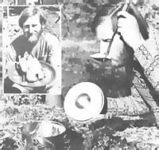

Jim McClarin made an interesting and energy-saving discovery...
One evening-in order to preserve two gallons of fresh milk while I was temporarily without refrigeration-I set about to sour the liquid into yogurt. First, I heated the milk to kill most of the bacteria. Then, when it had cooled down to around 105°F, I inoculated the "moo juice" with storebought yogurt.
However, just as I reached that point in the yogurt-making process, I was unexpectedly invited out to dinner. In order not to waste the milk (or pass up the invitation), I had to locate a warm spot for my pail ... and remembered some half-buried mental note on how the ancient Chinese had made a practice of cooking eggs in compost.
Luckily, the pile of future garden helper that I had built months earlier was spewing out quite a bit of steam, so I stashed the airtight container in the hot compost ... just (I thought) until I could get back home and rig up my usual light bulb and ice chest incubator. As it turned out, however, I didn't return until quite late ... and decided the pail could stay where it was till morning.
When I lifted the lid the next day, I found ... not yogurt, but cheese! Perhaps the milk wasn't heated up enough in the first place ... or maybe the humus heap was too hot. At any rate, a fine cheese curd had formed.
Since that first attempt, I've learned to probe carefully in the warm "working" mound until I find a spot with just the right warmth to create successful compost yogurt ... a dish that has become a regular part of my diet!
For my second experiment, I decided to try to cook a nice fresh egg ... safely enclosed in a plastic bag. I dug down into the decaying matter until I said "ouch" when I grabbed a hot handful, dropped in the sack with a rope attached, and covered it over again.
Then, early the next day, I peeled and ate the most mouthwatering hard-boiled egg of my life ... except, of course, the taste treat hadn't been boiled: My slow-cooked repast had none of the mealiness of yolk and rubbery textured white that I had-in the past-associated with the dish. Now, whenever I hanker for a real breakfast treat, I drop a few eggs into the compost heap In the evening and look forward to a morning feast.
Before long, I got around to trying to cook meat dishes in my organic "oven". The first roast, alas, was a failure. My newly built compost pile hadn't warmed up enough yet, while the established heap was a bit too cool. I was undaunted, however, and bought another roast ... along with a meat thermometer. Once the new heap had gotten "up to heat", I put the second piece of beef inside my yogurt pail (to keep it sealed against bacteria) and buried the whole kit and caboodle in the hottest part of the pile (where the temperature tested out at 155°F).
Thirteen hours later, a brief taste of the meat trapped in its own broth convinced me that compost is the only way to roast!
I served the tender, juicy viand to friends at lunch that day, and they all agreed it was superb.
In no time at all, a duck with orange juice and apricots found its way into the hot heap. It stayed buried for 23 hours at 155-165°F ... and was perfect when I served it with wine and wild plum sauce.
I must admit, however, that my unusual cooking method does have its limits ... as I found out when I tried to cook pinto beans and soybeans. After repeated checks for "doneness," I finally had to throw the still-hard legumes away ... and the same fate befell my compost-uncooked potatoes and carrots. (I guess such victuals require higher temperatures than most "garden mounds" are able to generate.)
At one point, I tried to turn my natural heat source into an organic shower ... by lacing a garden hose back and forth through the pile as I built it. However, that setup produced only a pitiful gallon of warm water at a time. The shortcoming might be remedied with the use of a buried water tank, but I'm not sure it's wise from the standpoint of composting-to rob the brewing pile of that much heat.
There's no telling where my experiments with compost cuisine will take me from here. I might try to incubate soybean tempeh ... on the theory that all of the compost's little microbes generate so much life force that-as seems to happen with my yogurt-they're bound to produce a beneficial effect on other fermenting organisms ... even when sealed away from them!
Of course, my limited knowledge of microbiology doesn't permit me to recommend compost cookery to anyone else. I can merely state that it works just fine for me!
You may be surprised to know that the heat generated by a pile of compost can do much more then merely cook a meal. In fact, MOTHER recently returned from a visit with the wellknown French wholistic gardener Joan Pain (shown in the accompanying photo) ... whose compost heap heals his home and water supply while it produces the methane that Jean uses to cook meals and fuel his van! And, of course, the "finished" organic matter is one of the secrets of the Frenchman's gardening successes. Look for a story on this incredible innovator ... in MOTHER NO. 62!
|
 |
|
|